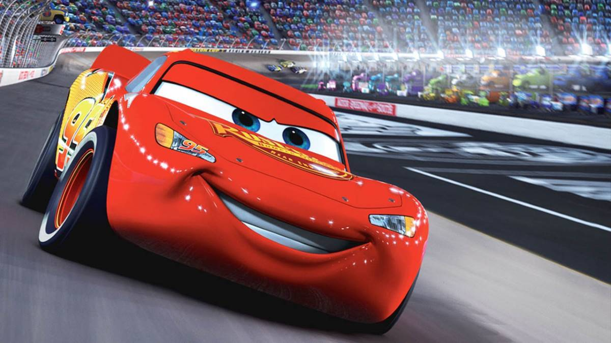
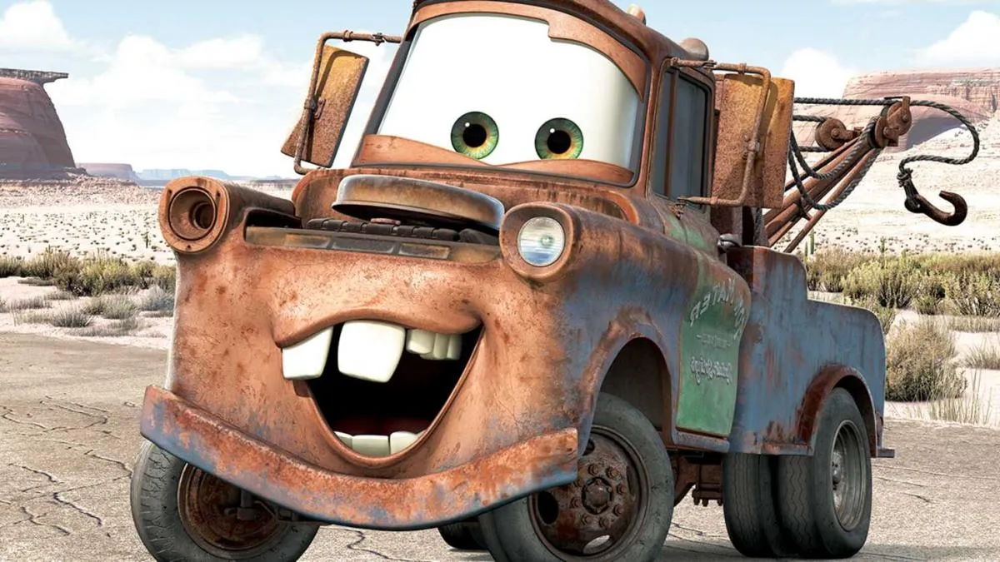
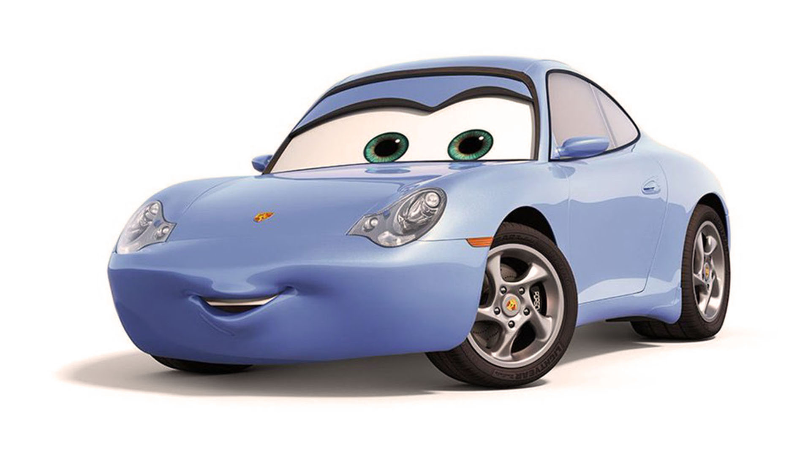
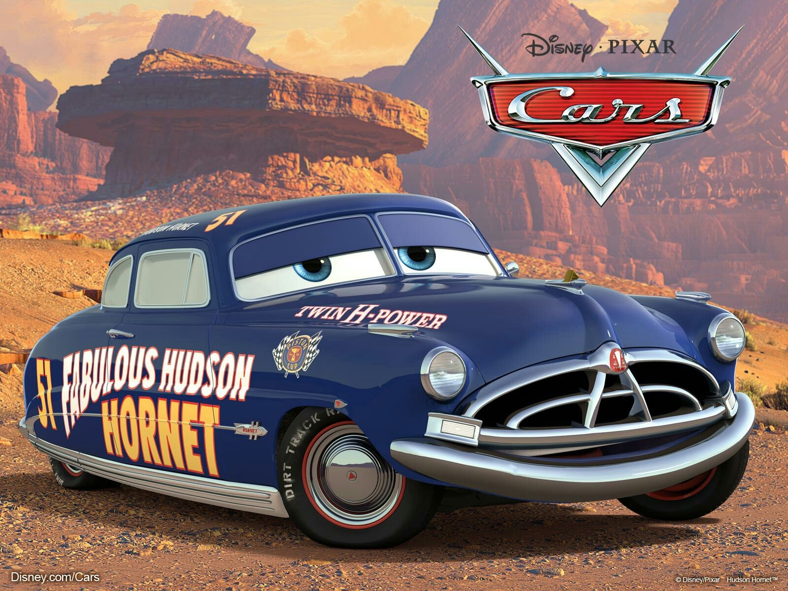
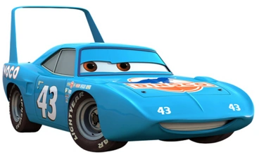

PELICULA
RESUMEN
DATOS DEL DIRECTOR
PERSONAJES PRINCIPALES
DONDE VER CARS?
MEDIA
DEJA AQUÍ TU OPINIÓN
LINKS DE INTERÉS
MAS LANZAMIENTOS
Personajes principales:
Rayo McQueen: Es un coche de carreras que a pesar de comenzar la película con malos comportamientos, se convierte en un coche lleno de valores.

Mate: Es el mejor amigo de Rayo, es una grúa oxidada pero muy graciosa, le enseña a rayo a como conducir marcha atrás lo cual
ayudó mucho a Rayo en la carrera final.

Sally: Es la dueña del motel donde pasaba Rayo las noches en su estancia en Radiador Springs, acabó enamorándose de Rayo, igual que él de ella.

Doc Hudson: Leyenda de la copa pistón que tras un gran accidente dejó su carrera, esto le afectó tanto que se fue a Radiador Springs y no volvió a competir.

El Rey: Es el corredor estrella de la gran scudería Dinoco, sufre un gran accidente en la ultima carrera y Rayo le ayuda a terminarla.
